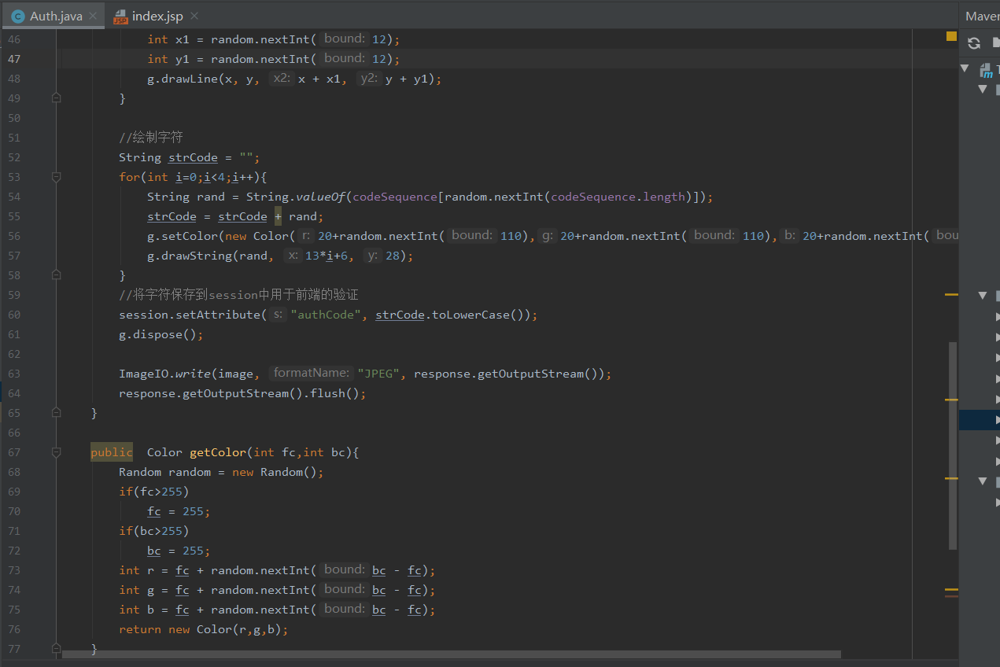

首先在JSP页面加上生成图片的链接
<img type="image" src="auth/authCode" id="codeImage" name="codeImage" style="cursor:pointer;"/>，src需要我们自己实现，实现逻辑如下

运行后，jsp页面会发出"auth/code"请求生成验证码，并将验证码放置于session中用于验证，运行效果如下
我们在jsp页面上加上输入验证码的输入框及提交按钮，点击按钮后进行验证码判断
后台会比将收入的验证码与放置于session中的验证码进行比对，并输出结果给JSP页面进行相应处理，当判断为失败，则刷新验证码
最后，相对完整的页面和逻辑都已实现，代码如下
JSP页面代码
<%@ page contentType="text/html;charset=UTF-8" language="java" isELIgnored="false" %>
<%@ page import="java.util.*" %>
<html>
<head>
<title>Title</title>
</head>
<%--<script src="js/jquery.min.js"></script>--%>
<script src="https://libs.baidu.com/jquery/1.8.3/jquery.js"></script>
<script type="text/javascript">
function submitForm() {
var inputCode=$("#authCode").attr("value");
var list={"inputCode":inputCode};
$.ajax({
//请求方式
type : "POST",
//请求的媒体类型
contentType: "application/x-www-form-urlencoded",
//请求地址
url : "auth/checkCode",
//数据，json字符串
data :list,
dataType:"json",
//请求成功
success : function(result) {
alert(result);
if(result=="1"){
alert("验证通过");
}else{
alert("验证失败，重新刷新验证码");
flushAuthCode();
}
},
//请求失败，包含具体的错误信息
error : function(e){
alert(e.responseText);
}
});
}
function flushAuthCode() {
//重新刷新验证码
$("#codeImage").attr("src","auth/authCode?abc="+Math.random());
}
</script>
<body>
<form id="authForm" action="checkCode">
<input type="text" id="authCode" name="authCode">
<img type="image" src="auth/authCode" id="codeImage" name="codeImage" style="cursor:pointer;"/>
<button type="button" id="submitBtn" name="submitBtn" value="提交" onclick="submitForm()"/>
</form>
</body>
</html>
后台代码package com.founderit.controller;
import org.springframework.stereotype.Controller;
import org.springframework.web.bind.annotation.*;
import javax.imageio.ImageIO;
import javax.servlet.http.HttpServletRequest;
import javax.servlet.http.HttpServletResponse;
import javax.servlet.http.HttpSession;
import java.awt.*;
import java.awt.image.BufferedImage;
import java.io.IOException;
import java.util.Random;
@Controller
@RequestMapping("auth")
public class Auth {
private char[] codeSequence = { 'A', '1','B', 'C', '2','D','3', 'E','4', 'F', '5','G','6', 'H', '7','I', '8','J',
'K', '9' ,'L', '1','M', '2','N', 'P', '3', 'Q', '4', 'R', 'S', 'T', 'U', 'V', 'W',
'X', 'Y', 'Z'};
@RequestMapping("authCode")
public void getCode(HttpServletResponse response, HttpSession session) throws IOException {
int width = 63;
int height = 37;
Random random = new Random();
//设置response头信息
//禁止缓存
response.setHeader("Pragma", "No-cache");
response.setHeader("Cache-Control", "no-cache");
response.setDateHeader("Expires", 0);
//生成缓冲区image类
BufferedImage image = new BufferedImage(width, height, 1);
//产生image类的Graphics用于绘制操作
Graphics g = image.getGraphics();
//Graphics类的样式
g.setColor(this.getColor(200, 250));
g.setFont(new Font("Times New Roman",0,28));
g.fillRect(0, 0, width, height);
//绘制干扰线
for(int i=0;i<40;i++){
g.setColor(this.getColor(130, 200));
int x = random.nextInt(width);
int y = random.nextInt(height);
int x1 = random.nextInt(12);
int y1 = random.nextInt(12);
g.drawLine(x, y, x + x1, y + y1);
}
//绘制字符
String strCode = "";
for(int i=0;i<4;i++){
String rand = String.valueOf(codeSequence[random.nextInt(codeSequence.length)]);
strCode = strCode + rand;
g.setColor(new Color(20+random.nextInt(110),20+random.nextInt(110),20+random.nextInt(110)));
g.drawString(rand, 13*i+6, 28);
}
//将字符保存到session中用于前端的验证
session.setAttribute("authCode", strCode.toLowerCase());
g.dispose();
ImageIO.write(image, "JPEG", response.getOutputStream());
response.getOutputStream().flush();
}
public Color getColor(int fc,int bc){
Random random = new Random();
if(fc>255)
fc = 255;
if(bc>255)
bc = 255;
int r = fc + random.nextInt(bc - fc);
int g = fc + random.nextInt(bc - fc);
int b = fc + random.nextInt(bc - fc);
return new Color(r,g,b);
}
@RequestMapping(value = "checkCode",method = RequestMethod.POST)
@ResponseBody
public String checkAuthCode(@RequestParam(value = "inputCode") String inputCode, HttpServletRequest request){
String checkCode=(String) request.getSession().getAttribute("authCode");
//返回1 代表判断通过,0代表失败
String isCode=checkCode.equals(inputCode)?"1":"0";
return isCode;
}
}